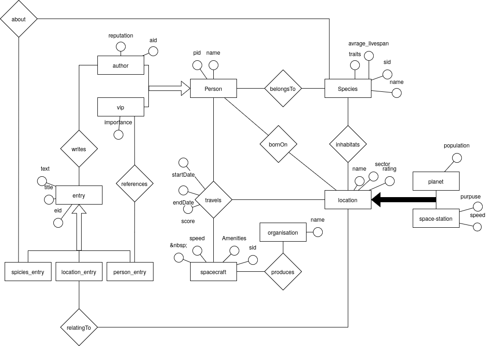

Introduction to Databases Project
The project aims to be a simplified version of the The Hitchhiker's Guide to the Galaxy
The project was build starting from prof. Cavaleses project requirements.
application domain
The HHGTTG Repository
We are interested in the Guide that contains entries helpful for navigating the universe, such entries have to be divided in the entries regarding persons of interest, entries regarding planets, entries regarding species and general entries. Only approved Authors may add entries to the Guide. People of interest may be given a score, to quickly identify how important they are. It is also of interest which organizations they may lead. In addition, we are interested in the travelers using our guide, which may rate the location they visited on a scale from 0 to 100. We are also interested in the Spacecraft they use to travel, and the name of the organizations that produce such spacecraft. We want to know the planet of origin of the travelers, the species they belong to, which planets they visited, when they visited it and the spacecraft they used to do so.
requirements
- It should be based on a domain containing between 6 and 10 main conceptual entities (i.e., without counting sub-entities that appear in ISAs or generalizations).
- There should be some structure in the set of entities, i.e., the ER schema should in addition contain at least one ISA and at least one generalization.
- There should be sufficient structure in the relationships, which usually means that the representation of the ER schema as a graph (where the nodes are given by the entities and relationships, and the edges are given by the participation of entities in relationships) should contain some cycles.
- The schema should contain cardinality constraints on the participation of entities to relationships that are different from the default (0,n).
- The schema should contain some identifiers made of multiple attributes, and at least one external identification for some entity.
- The schema should contain at least one optional attribute and at least one multi-valued attribute.
- There should be some external constraints, that cannot be represented in the ER model.
- The specification should include an indication about the volumes for the various entities and relationships (pay attention to the coherence between the volumes and the cardinality constraints of the ER schema).
- The specification should include a workload of the most common queries and operations (between 5 and 10) that are of interest in the modeled domain, with an indication of their frequency.
glossary
diagram of the conceptual schema

data dictionary
Main Entities:
table of volumes and table of operations according to the foreseen application load